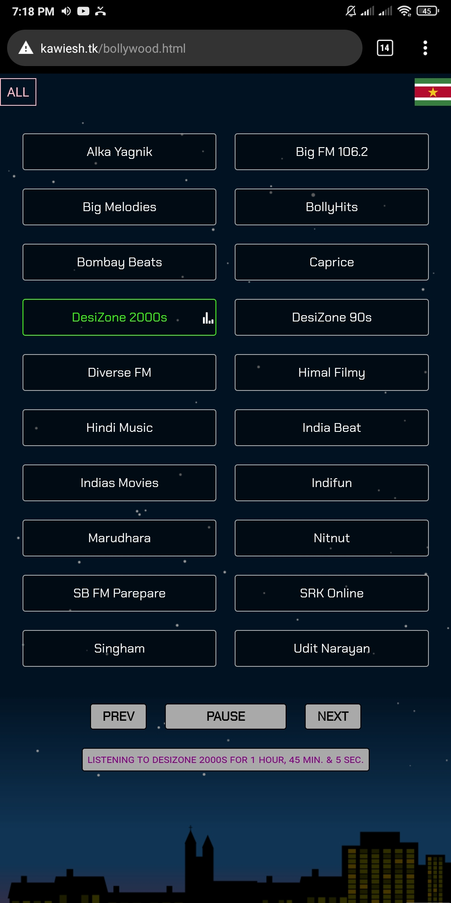
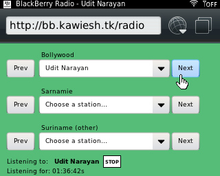
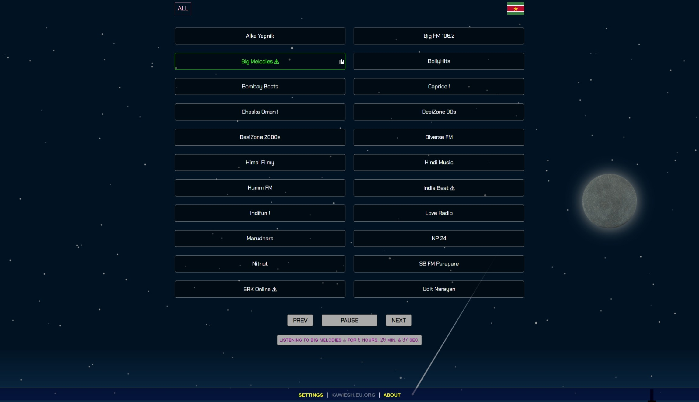

About
This site holds a collection of Surinamese radio stations
and some radio stations airing mostly late 90s & early 2000s Bollywood songs.
It's intended for private/non-commercial use.
Legality
The streams are not hosted and or modified by me.
The stream URLs are gathered from the web and are publicly accessible.
The stations on www.kawiesh.top merely act like shortcuts to the original streams.
If you have any comment or want to remove/add your station,
use the contact information on the
top of this page.
Http vs. Https
A valid SSL certificate is present on the site (see padlock icon
in the address bar), but is not used by default. That's because some of the radio stations
stream their content over http. And it's not possible to
access http resources over https.
Https is more secure, but because this is a static website
(no server-side coding involved) http (probably) won't cause any risk.
TL;DR:
If you want to be able to listen to all stations, use http.
If you want to be on the safer side, use https (not all stations will be available) !
Update: All stations can now be played over https. Those
that are served over http will be accessed using a public proxy over https
(denoted by
! after the station name). This is not a guaranteed/durable
solution though; if the proxies stop working,
the stations won't play over https.
However, they'll all still be accessible over http.
Code
The main code can be found
here.
- URLs are gathered from the web
- These are stored in a JavaScript object literal
- This object is looped through to create station blocks
- Functionalities (such as play, pause, time update) are added
The site relies heavily on JavaScript (>ES 6).
The
streamlined version
of the site (optimized for BlackBerry phones) can be used
on older devices that don't support ES6.
Media Controls
The following media controls are added:
- Previoustrack: Jump to previous station
- Nexttrack: Jump to next station
These controls will appear in the notification panel if
the browser supports Media Session API (e.g: Chromium
based browsers). The controls can be used to switch between
stations in the background, without opening the browser/page.
Screenshots (of old .tk site that died ):
Android

BlackBerry

Desktop
